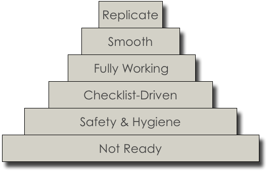
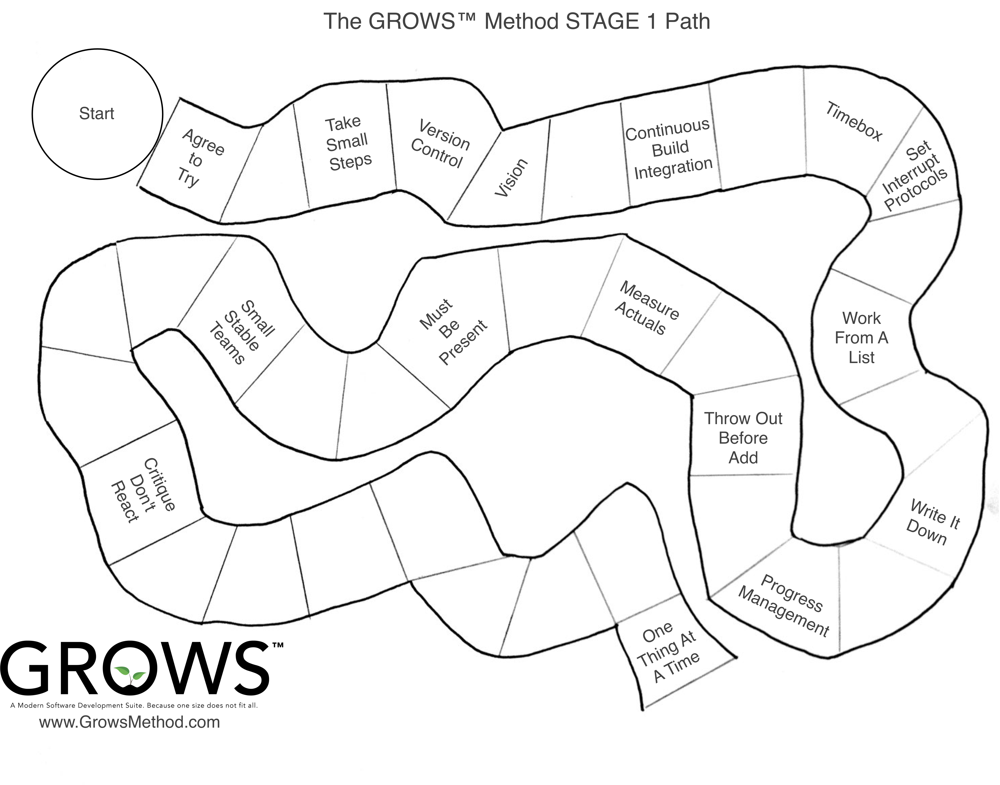

Toolshed Technologies
Andy Hunt. Author, Publisher,
Programmer, Musician.
Stop Practicing and Start Growing
—Andy Hunt
07/11/2016
I was fortunate enough to be invited, along with sixteen other thoughtful practitioners, to the Snowbird summit in 2001, where we adopted the word “agile” to describe a better way of developing software. The leaders of established methodologies, including Extreme Programming (XP), Scrum, Crystal, DSDM and others were all there to voice their particular take on what this approach to software meant to them. Together we tried to sift through all of our disparate thoughts and determine which aspects were common across all these different methodologies, and propose some sort of guidelines, or principles, for others to follow.
And so we wrote the Agile Manifesto,1 which resonated throughout the development and business communities. Faced with the outrageous failure rates of non-agile, plan-based approaches, the world breathed a grateful sigh of relief as an answer had been found, and all our problems were solved.
Only it didn’t quite work out that way.
As I’ve noted previously,2 3 “It seems that the initial focus of the agile software development has been forgotten over time, and the goal has shifted from becoming adaptive, flexible, agile practitioners to merely following a subset of canonical, prescribed agile practices. It appears that people have forgotten why we do what we do.”
Unfortunately that’s still the case. The current crop of industry surveys4 5 6 suggest that traditional, plan-based projects are prone to failure, with a mere 11% success rate. That means nearly 90% are late, under-featured, or never deliver at all. Actual agile teams enjoy a 40% success rate. However, about half the “agile” teams are seen to be agile in name only, and haven’t actually achieved real agility.
Granted your odds are still much better even with a faux-agile approach, but still the odds are not in our favor.
The Problems
Based on my experience (both direct and second-hand), common complaints and issues that consistently arise include the following:
Projects fail to deliver on time, or too often fail to deliver anything at all. Failures aren’t correlated with effort; injecting even more money and resources doesn’t save the project.
Management has little to no visibility into project progress or status. Visibility and transparency without micro-managing or paralyzing levels of detail remains difficult to achieve.
In the opposite direction, Development teams don’t understand their management’s decisions or direction. Communication needs to flow both ways, and we struggle with that.
Team members feel like they’re stuck in dead end jobs with no defined career path. You might think that’s strictly an organizational or HR issue that doesn’t directly affect development itself. However, the skill level of development team members is critical to the success of the project. In fact, it may be the only metric that really matters. A large study7 suggested that team skill level was more important to success than any particular methodology or practice.
Technical practices aren’t included, understood, or budgeted. Most teams that claim to be agile are in fact only implementing some subset of Scrum. Scrum is a lightweight project management framework, and does not specify the required technical practices. Many successful teams augment plain Scrum with Extreme Programming (XP), which does provide necessary technical practices. But not enough teams pay attention to these technical practices—a recent survey showed 54% of agile teams using Scrum, only 11% combining Scrum with XP.5 Simply adopting XP doesn’t solve all your potential issues, however. Even XP makes assumptions about basic competencies that often aren’t met.
Lack of automation. A handcrafted, artisanal approach is a wonderful way to produce beer or cheese, but utterly inappropriate to build and deploy software. Build, test, and deploy have to be 100% reliable and repeatable, which means these activities must be thoroughly automated. Tying up developers to run manual builds is both a large risk and a waste of already scarce resources.
Agile methods aren’t. Finally, in the ultimate irony, current “agile” software methods are not, themselves, particularly agile. There are some great ideas in the agile philosophy and practices, but too often the focus in organizations is on “perfecting the practices” instead of using the practices to gain great advantage. The Agile Manifesto itself states:
“At regular intervals, the team reflects on how to become more effective, then tunes and adjusts its behavior accordingly.”1
For the most part, that simply doesn’t happen. There is a dearth of any new practices in the community. Teams are uncomfortable deviating from established “agile canon.” Adoption of new practices is often hit or miss, and doesn’t always include necessary players in the organization such as executives, QA, testers, or even users.
After quite a bit of speaking and writing on matters of agility8 and learning,9 I decided to start a new and different take on modern software development. I call it The GROWS™ Method.
GROWS aims to make adoption of modern software engineering practices easier and more effective, improve organizational involvement, and emphasize a robust technical infrastructure. But most importantly, GROWS permits and encourages teams to hone in on what works for them and their company dynamically, without the artificial restrictions of some sort of agile “canon” or static confines of a plan-based approach.
The GROWS™ Method
The GROWS™ Method is an empirical process, featuring short-feedback loops and familiar iterative and incremental delivery of working software, but using software engineering and organizational practices appropriate to the skill level of the team and organization. GROWS leverages the best that we’ve learned with current approaches and places them in an inclusive, sustainable, growth-centric environment.
GROWS is based on several key ideas:
- A Skill Acquisition Model
- Tracer-Bullet Development Model
- Empirical, Feedback-Driven Process Adoption and Technical Solutions
A Skill Acquisition Model
GROWS’ Skill Model is inspired by the original Dreyfus Model of Skill acquisition. Although the Dreyfus model was envisioned long before our more advanced, modern research into cognition and neuroscience, it remains a useful starting point.
For our purposes, the central lesson and take-away from the skill model approach is that Beginners and Experts have different needs. This is a reality that we often ignore.
When it comes to issues of method or workflow, “One size does not fit all.” For any particular skill area, a team or organization can see huge variations in skill level and experience amongst team members.
We all start off as beginners, and move through several learning stages as we gain experience and greater skill at some task. With this basic progression in mind, and borrowing ideas from the classic Dreyfus Model of skill acquisition, The GROWS™ Method emphasizes different things at different stages:

- Stage 0: Not Ready. GROWS demands open-minded commitment and a willingness to experiment. If that’s not the case, then the organization is not ready to start yet.
- Stage 1: Safety & Hygiene. Once you’re ready to begin, the emphasis at this beginner stage is on practices geared to producing software the Right Way, using modern software engineering principles to reduce risk and technical debt.
- Stage 2: Checklist-Driven. With a solid technical underpinning, everyone can proceed to work together producing the Right Thing to the Right Rhythm using simple, concrete checklists that the method provides.
- Stage 3: Fully Working Recipes. With enough experience at the simpler Checklist level, you can move on the more advanced Recipe level, where more judgment and critical thinking is required.
- Stage 4: Smooth Adaptations. At this advanced level, everything works smoothly, with a custom fit and local adaptations to your organization, users, and way of working.
- Stage 5: Replicate, Teach, Invent. Finally, at the “expert” level, you can look to teach and scale beyond your immediate environment, and replicate your success.
GROWS starts with the simple, mechanical practices to ensure a firm foundation and solid base-level skills before moving on to higher-skill practices targeting more experienced practitioners.
Many unsuccessful agile adoptions fail because the team tries to change too much, too quickly, without a reasonable growth path and without discontinuing existing poor practices.
It’s important to note that not all organizations want to grow their staff to the expert level, or even invest in anything past the Stage 2, Advanced Beginner stage.
Tracer-Bullet Development Model
The ideas behind iterative and incremental development are justifiably popular; the GROWS™ Method extends these notions to embrace the fully “continuous” metaphor. Central to the GROWS method is the idea of Tracer Bullet Development.
A tracer bullet is a military device: ammunition is enhanced with regular phosphorous-tipped rounds which light up in flight, showing the actual weapon trajectory, under actual conditions. Honing in on a moving target becomes possible as the gunner can adjust their aim dynamically. It doesn’t matter if the target moved or the wind shifted, you simply adjust. Tracer Bullet Development was first described in the seminal text, The Pragmatic Programmer: From Journeyman to Master10 and expanded on in Ship It!.11
The idea isn’t new, but as it turns out the words are important. Developers, stakeholders and users who do not understand the implications of an “iteration”, or even of “vertical slices” vs. layers, or even tip-to-tip development, do seem to better understand the idea of a tracer bullet.
We’ve had managers and executives who completely misunderstood the nature of iterative development, despite having had significant experience with Scrum. Yet these same folks more easily grasped and were able to work with the idea of a “Tracer Bullet”, end-to-end through the code, dynamically adjusting to shifting targets and environmental conditions as needed.
The idea of Tracer Bullet Development, or TBD, is to have the very first version of the software go all the way from end to end.
It doesn’t have to do anything more than a “Hello, World” level program, but it needs to have all the pieces working together, from front end to back end. This very first, ridiculously thin version of the project isn’t a MVP (Minimum Viable Product). It’s a stub, using canned/dummy data and hard-coded responses. The team fleshes out this skeleton as work progresses. Large-scale changes are easy to make because the code is so thin at this point, so the proposed skeleton can change and evolve easily as the project grows and problems are found.
A Tracer-Bullet approach enhances the basic iterative, incremental approach by ensuring there are no dark corners. It forces a full, holistic architectural view of the system early, but without dragging in ponderous design requirements. It’s complete, but skeletal—laughably thin. But from this tiny seed grows mighty software projects.
This approach forces the mechanical issues of build and deployment early. You start off by building something. No matter how terrible the system might turn out, you’re already way ahead of all the projects that have failed to deliver anything at all.
Since beginners need concrete rules (Stage 2 and below), here are our rules for beginning Tracer Bullet Development (TBD):
- All data flows through defined interfaces
- Interfaces are defined and documented using code and tests only
- All components run on different machines
- Interfaces require canned data/hard-coded responses
- Start the work as a team, then divide and conquer along the interfaces as demarcated
With this thin, barely functional demo skeleton in place, the team can then proceed working to a rhythm, iteratively, in time boxes to incrementally add functionality to the growing system. Each time-boxed iteration should last one to four weeks, and each iteration should remain the same length. At the end of each iteration, the team demonstrates completed features. Progress is measured in completed features, not by any derived or artificial metrics. You can’t ship hours worked, you can’t ship story points, you can’t ship team velocity. You ship working software, so measure working software.
During the iteration, software build and test happens continuously in the background, as code is checked in to the team’s version control repository continually throughout the day.
The benefits of this approach include:
- Easy way to sketch out / outline the system
- Forces clean demarcations between major components
- Enables test automation
- Enables parallel work
This style of development dramatically reduces risk and keeps feedback loops short. Short feedback loops are critical to minimizing technical debt: as a programmer, I can fix a bug I just made very easily. Fixing a bug I made last week is harder. Something I worked on six months ago? I have no idea where to even begin.
Using TBD, the team grows the software organically, piece by piece, always maintaining a buildable, releasable product, and able to more easily adjust to changes in the target or environment as they happen.
GROWS is not just about the software, though. People, teams, and organizations must grow as well, in order to thrive (or even just survive). GROWS creates an environment of exploration and growth not only to solve technical challenges and questions, not only to produce robust and responsive software, but to grow the skills of the participants and the organization as well.
While we include specific practices to encourage individual and team learning and team skill development, the real key to growth lies in an empirical approach.
Empirical, Feedback-Driven Process Adoption
In GROWS, you adopt a practice by running an experiment. Each practice comes with its own experiment, which helps you identify the conditions for the experiment, the feedback to look for and how to evaluate it. For novices, the feedback and evaluation are very concrete and unambiguous, with no judgment required. That part comes later.
Experiments are time-boxed, which limits commitment and risk, unlike the more amorphous “change,” which is permanent and open-ended. It’s very clear all involved that you aren’t yet adopting this practice or committing to it. You’re just going to give it a try.
Everyone participates in the experiment and in evaluating the outcome, which gives the participants a chance to “put their own egg in,” as the saying goes. If you’re not familiar with the (possibly apocryphal) story: after Betty Crocker first came out with an instant cake mix, sales flattened. One researcher suggested that since all you had to do was add water to to the mix, homemakers didn’t feel they were actually cooking. The company changed the formula so you had to add fresh eggs in addition water, and now consumers felt like cooks again. The consumer’s additional involvement and level of participation is said to have made the difference.
Learn to Use Feedback
At the early stages of adoption, the recommended practices are oriented toward practical “hygiene” and safety, and are not controversial, abstract, or rely on delayed gratification. These first practices are immediate and useful, and chiefly serve to introduce the idea that you can try stuff before committing to it, and build and deploy reliably and continuously. This approach establishes a baseline environment where you have control over adopting practices, modifying them, or rejecting them—and are even encouraged to do so. (Oh, and as you might guess, the recommended practices themselves change as the team and organization gain skill and grow; it’s not static).
We want to help teach people and get them used to the idea of expecting and acting on feedback, with a short feedback loop. But that’s the easy part.
The harder part comes in evaluating feedback. At these early stages, GROWS specifies very concrete, unambiguous feedback to look for. Later on, at higher skill stages, that process gets a lot more interesting, and a lot more difficult. But by then the team and other participants have built up trust and a familiar habit in seeking and applying feedback, which makes it easier to work together when the harder issues come up.
Empirical, Feedback-Driven Technical Answers
Similar to issues of process adoption, GROWS uses experiments to answer technical questions. Our rules for beginners specify that experiments in GROWS are:
- Cheap to run
- Very short term, with a time-boxed deadline
- Generate specific, measurable outcomes of value
- Conditions of test and outcomes agreed upon ahead of time
- Only include a subset of the team if you can
- No experiment fails; all experiments generate data to inform the next experiment
That last point is perhaps the most important: no experiment fails. An experiment is only a failure if you collect no data from it.
For example, when considering the difficult question of “which JavaScript framework should we use” or more generically, “which architecture should we use,” build small, quick prototypes of at least three choices. Try each one, and evaluate it for the aspects that might be important to you: ease of construction, maintenance, performance, flexibility, and so on. Pick the one that appears best at the moment, but realize that information is largely ephemeral, and this decision may well have to be revisited in the future. Build the code accordingly.10
Now some folks might be concerned at this experimental approach. I’ve had executives balk and ask, “but this sounds really expensive.” It’s not, at least not by comparison. A one, two or three week technical experiment is far cheaper than a one, two or three year product development where you only get the feedback at the very end. By then of course, it’s too late and you’ve risked the entire project budget, not merely a few weeks.
Starting with The GROWS™ Method
GROWS is a journey, not a destination. As with any journey, it takes steps—often a great many steps—to get where you’re going. It’s important to honor the GROWS core practices especially including:
- Take Small Steps
- Agree to Try
- Adopt By Experiments

GROWS emphasizes safety and hygiene first, so you’ll notice that the starting practices in Stage 1 are geared toward the mechanics of version control, continuous build/test, and so on.
It’s critical to get a rock-solid, fully automated build/test/integration system in place first. Without a solid technical infrastructure, you’re building on a fragile foundation and increasing your risk of failure dramatically.
For these beginner-level practices, please note: if you are already using a practice, check the definition on the GROWS website to make sure that you’re getting the feedback and results as expected and defined by the practice before proceeding. If not, start over.
GROWS is an Experiment, Too
The idea of GROWS is, itself, an experiment. Any or all of these ideas may not work in any particular context. And that actually is the whole point.
Because ultimately we, the software development community, do not have all the answers. You should not trust your organization to someone else’s opinion, even mine.
Instead, you should experiment: gather feedback, evaluate the results honestly, and adjust immediately.
That’s the secret to stop practicing and start growing.
We’re doing the same thing with GROWS itself: gathering feedback, evaluating the results, and adjusting. The GROWS™ Method is actively being created and posted online by Andy Hunt and Jared Richardson, with feedback, suggestions, and ideas from our friends and the community. We hope you’ll join the conversation at growsmethod.com.
“Do not be too timid and squeamish about your actions. All life is an experiment. The more experiments you make, the better.”—Ralph Waldo Emerson
References
-
Hunt, Andy “Uncomfortable With Agile” CrossTalk, The Journal of Defense Software Engineering, May/June 2013. Print. ↩
-
“The Failure of Agile”, http://blog.toolshed.com/2015/05/the-failure-of-agile.html ↩
-
“7th Annual State of Agile Development Survey”, 2014. http://versionone.com. ↩ ↩2
-
https://www.rallydev.com/finally-get-real-data-about-benefits-adopting-agile?nid=6201 ↩
-
Jones, Capers. Software Assessments, Benchmarks, and Best Practices. Addison Wesley, 2000. Print. ↩
-
Subramaniam, Venkat and Hunt, Andy. Practices of an Agile Developer: Working in the Real World. Raleigh, NC: Pragmatic Bookshelf, 2006. Print. ↩
-
Hunt, Andy. Pragmatic Thinking and Learning: Refactor Your “Wetware”. Raleigh, NC Pragmatic Bookshelf, 2008. Print. ↩
-
Hunt, Andrew and Thomas, David. The Pragmatic Programmer: From Journeyman to Master. Addison Wesley, 2000. Print. ↩ ↩2
-
Richardson, Jared and Gwaltney, William A. Ship It! A Practical Guide to Successful Software Projects. Pragmatic Bookshelf, 2005. Print. ↩
Keep up to date with my low-volume newsletter and don't miss another article or fresh idea:


Latest News
-
New article: The Limits of Process
January 25, 2022 -
New article: Habits vs. Practices
January 5, 2022 -
New novel: Weatherly Hall
August 10, 2021 - List All News...
Recent Articles
-
The Limits of Process
January 25, 2022 -
Habits vs. Practices
January 5, 2022 -
Why Are There So Many Misconceptions Around Agile?
November 20, 2020 - List All Articles...
Upcoming and Recent Appearances
- Private Keynote, Fortune 500 company. Sep 30, 2020
- TDev Conference Keynote. Oct 3, 2020
- Private Keynote, Large Venture Capital firm. Oct 20, 2020
- DevOps Summit Keynote. Nov 7, 2020
- AgileMovement.it Keynote Nov 14, 2020
- Empowering Agile Fireside Chat, Feb 25, 2021
Email schedule@toolshed.com to book Andy for your next keynote or session.